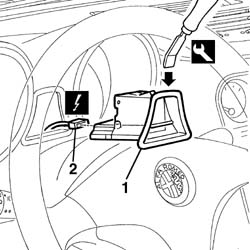
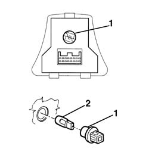

5560C60 anomaly display - r+r
- Path
- Procedures > 55 ELECTRICAL EQUIPMENT > 5560 INSTRUMENT PANEL > 5560C other instruments > 5560C60 anomaly display - r+r
- Kind
- repair procedure (removal / refitting; the operation number is the code)
- Applies to
- all engines; all production periods
- Interactive page
- https://sloeber94.github.io/elrnDB-a156/en/#/3238502
Applies to: all engines; all production periods
 Removing
Removing
 Refitting
Refitting1. Remove the component with theIU+2019 special tool .
 | Name | Country |
|---|---|---|
1 | Scraper blade | 1.823.014.000 |
2. Disconnect the electric connection and remove the component.
 | Name | Connector |
|---|---|---|
2 | Check control |

Applies to: all engines; all production periods
1. If necessary, rotate and remove the lamp holder of the lighting lamp.
Remove the lamp from the lamp holder. Pressure joint.

Applies to: all engines; all production periods
Refitting
RemovingCheck that the instrument is not damaged.
If removed, mount lamp and lamp holder.
Connect the electric connection.
Put the component in its seat.
Check the functionality of the instrument and the functions it check.
Topics linked from this page (1)
Topics that link to this page (24)
- K10 DOORS OPEN CHECK NOT WORKING
- K55 CODE FAILURE WARNING LIGHT OFF / (DO NOT CARRY OUT INITIAL TEST)
- K60 ABS FAILURE WARNING LIGHT ON
- K61 ABS WARNING LIGHT OFF / (DO NOT CARRY OUT INITIAL TEST)
- K63 HANDBRAKE WARNING LIGHT OFF / (DO NOT CARRY OUT INITIAL TEST)
- K80 AIRBAG FAILURE WARNING LIGHT ON
- K81 AIRBAG WARNING LIGHT OFF / (DO NOT CARRY OUT INITIAL TEST)
- K90 INSTRUMENT LIGHTS / NOT WORKING
- 5010B24 under-facia air ducts r r
- 5020A10 heater box - r+r
- 5020L10 additional heater system boiler - r r
- 5040B30 expansion valve (tube orifice) - r+r
- 5040C10 air conditioner box - r+r
- 5040C50 air conditioner heater radiator - r+r
- 5040D52 air inlet and recirculation flap actuator - r r
- 5040D76 air contitioner distribution flap control motor - r r
- 5040D84 air conditioner left hand air mixer flap control motor - r r
- 5040D86 air conditioner right hand air mixer flap control motor - r r
- 5040D90 air conditioner system wiring bundle - r r
- 5505A26 bonnet wiring - r r
- 5505C31 under-facia wiring - r r
- 5505C41 cabin wiring - r r
- 7040A10 instrument facia trim - r+r
- 7040A97 facia trim support beam - r r